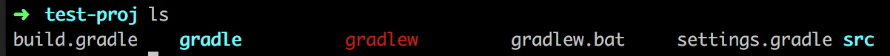
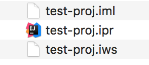

使用gradle创建java项目
近来在公司做毕业生入职前培训，针对项目中常用的java框架及用法做练习，通常大家会先从功能入手，让项目跑起来，大多数朋友可能会选择IDE来初始化一个项目，但其缺点是会创建一些IDE使用的工程文件出来，不同IDE创建的也不同，而这与我们代码本身没有关系，大家也容易不留神把它们提交到repository里。
而这些问题，构建工具都可以解决。我们今天以gradle为例，简单介绍一下一个项目从0到1的过程。
Step 1. initialize a java project
1 | $ mkdir test-proj |
可以看到路径下已经创建出了构建该项目的所有目录结构：

Step 2. change gradle wrapper version
gradle从2.3以上，提供了gradle wrapper的支持。什么是gradle wrapper？它为我们提供了消除由于构建工具版本不同带来的差异性的方法。
举个例子，你本机安装的gradle是3.0的，而小组其他人的gradle是2.7的。但由于编译要求，我们需要使用2.13这个版本来对项目进行构建，我们是强制小组成员都更换版本吗？现在的软件开发越来越提倡通过工具来消除因开发环境的不同造成编译结果的不同，而非直接修改我们的环境。在某些项目上，我们甚至会使用docker等容器化技术对我们的代码做编译，当然这是后话。
gradle wrapper的作用，正是通过配置文件，指定我们项目用哪个版本的gradle做构建。
在刚刚初始化好了的项目中，你会看到gradle/wrapper/gradle-wrapper.properties这个文件，查看它：
1 | #Tue Apr 25 15:23:26 CST 2017 |
最后一行可以看到当前使用的是gradle 3.0
如果我们想改成2.13，在项目根目录下执行如下命令即可：1
$ gradle wrapper --gradle-version 2.13
再次查看该文件：
1 | #Tue Apr 25 15:25:47 CST 2017 |
修改好了之后，对项目构建，就可以使用 gradlew 这个命令进行构建了，即使用我们指定的版本进行构建。例如：1
./gradlew build
Step 3. 将代码构建为intellij工程
以intellij为例，如果不使用IDE的导入功能，我们也可以将项目转换成intellij识别的项目。首先，在build.gradle中引用idea插件（idea即intellij的组件包）1
apply plugin: 'idea'
执行：1
./gradlew idea
你会发现，工程目录下多了这么几个文件：

好了，双击带有intellij图标的文件即可打开intellij了。
同样的，如果未来要切换到其他IDE里面，也可以执行下面这句一次性清理idea工程文件：1
./gradlew cleanIdea